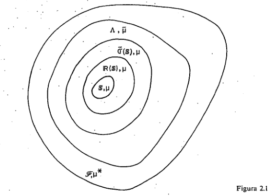

2.2 Extensão de medidas
PROPOSIÇÃO 2.2.1. Seja \(\mu\) uma medida finitamente aditiva sobre o semi-anel \(\mathbb{S}\). Então existe uma única medida \(\overline{\mu}\) finitamente aditiva sobre o anel gerado por \(\mathbb{S}\), que é uma extensão de \(\mu\).
Demonstração Observemos inicialmente que se \(\sum\limits_{i=1}^{n} C_i = \sum\limits_{j=1}^{m} B_j\), com \(C_i\) e \(B_j \in \mathbb{S}\), então: \[ \sum_{i=1}^{n} \mu(C_i) = \sum_{i=1}^{n} \sum_{j=1}^{m} \mu(C_i \cap B_j) = \sum_{j=1}^{m} \sum_{i=1}^{n} \mu(C_i \cap B_j) = \sum_{j=1}^{m} \mu(B_j). \] Definimos então para todo \(A\) no anel gerado por \(\mathbb{S}\), com \[ A = \sum_{i=1}^{n} C_i \quad \text{e} \quad C_i \in \mathbb{S}, \] \[ \overline{\mu}(A) = \sum_{i=1}^{n} \mu(C_i), \] o que é possível pela observação acima (isto é, \(\overline{\mu}\) está bem definida). É fácil ver que \(\overline{\mu}\) é finitamente aditiva sobre o anel gerado. A unicidade é evidente.
PROPOSIÇÃO 2.2.2. Seja \(\mu\) uma medida sobre um semi-anel \(\mathbb{S}\). Então:
\(A \subseteq B \Rightarrow \mu(A) \le \mu(B), \quad A, B \in \mathbb{S} \quad\) e
\(A \subseteq \bigcup\limits_{n=1}^{\infty} A_n \Rightarrow \mu(A) \le \sum\limits_{n=1}^{\infty} \mu(A_n); \quad A, A_n \in \mathbb{S}\).
Demonstração
\[ B-A = \sum_{i=1}^{n} C_i, \quad C_i \in \mathbb{S} \] \[ B = A + \sum_{i=1}^{n} C_i, \] \[ \mu(B) = \mu(A) + \sum_{i=1}^{n} \mu(C_i) \ge \mu(A); \]
\[ \bigcup_{n=1}^{\infty} A_n = A_1 + \sum_{n=2}^{\infty} \left(A_n - \bigcup_{i=1}^{n-1} A_i\right). \] Agora \(\left(A_n - \sum\limits_{i=1}^{n-1} A_i\right)\) é um elemento do anel gerado por \(\mathbb{S}\), e portanto \[ A_n - \bigcup_{i=1}^{n-1} A_i = \sum_{j=1}^{k_n} B_{nj} \quad B_{nj} \in \mathbb{S}. \] Se definimos \(k_1=1\) e \(B_{11}=A_1\), temos que: \[ A = A \cap \sum_{n=1}^{\infty} \sum_{j=1}^{k_n} B_{nj} = \sum_{n=1}^{\infty} \sum_{j=1}^{k_n} (B_{nj} \cap A) \] e \[ \mu(A) = \sum_{n=1}^{\infty} \sum_{j=1}^{k_n} \mu(B_{nj} \cap A) \le \sum_{n=1}^{\infty} \sum_{j=1}^{k_n} \mu(B_{nj}) \le \sum_{n=1}^{\infty} \mu(A_n). \]
Seja \(\mu\) uma medida sobre um semi-anel \(\mathbb{S}\).
PROPOSIÇÃO 2.2.3. Dada uma seqüência \(\{C_n\}, C_n \in \mathbb{S} \forall n\), existe uma seqüência \(\{C_n'\}, C_n' \in \mathbb{S} \forall n\), tal que: \[ \bigcup_{n=1}^{\infty} C_n = \sum_{n=1}^{\infty} C_n' \quad \text{e} \quad \sum_{n=1}^{\infty} \mu(C_n') \le \sum_{n=1}^{\infty} \mu(C_n). \]
Demonstração \[ \bigcup_{n=1}^{\infty} C_n = C_1 + \sum_{n=2}^{\infty} \left[C_n - \left(\bigcup_{i=1}^{n-1} C_i\right)\right] \qquad \text{(I)} \] Porém, \(\forall n \ge 2, C_n - \bigcup_{i=1}^{n-1} C_i\) pertence ao anel gerado por \(\mathbb{S}\), e pela Prop. 1.2 pode ser escrito como uma soma finita de elementos de \(\mathbb{S}\), ou seja, \[ C_n - \bigcup_{i=1}^{n-1} C_i = \sum_{j=1}^{k_n} B_{nj} \] onde \(B_{nj} \in \mathbb{S}\). Substituindo em \(\text{(I)}\), obtemos uma soma enumerável de elementos de \(\mathbb{S}\). Como \(\sum_{j=1}^{k_n} B_{nj} \subseteq C_n\), temos que \[ \mu(C_n) \ge \sum_{j=1}^{k_n} \mu(B_{nj}). \] Temos também que \[ \sum_{n=1}^{\infty} \mu(C_n) \ge \sum_{n=1}^{\infty} \mu(C_n'). \]
DEFINIÇÃO 2.2.1. Seja \(\mathbb{S}\) um semi-anel. \(\mu\) é uma medida sobre \(\mathbb{S}\). Definimos: \[ \mathscr{F} = \{A \subseteq \Omega: A \subseteq \bigcup\limits_{n=1}^{\infty} C_n, \text{ para alguma seqüência } \{C_n\}_{n \in \mathbb{N}} \text{ onde } C_n \in \mathbb{S}, \forall n\}. \]
Observação 1. \(\mathscr{F}\) é um \(\sigma\)-anel e é hereditário, no sentido de que \(B \subseteq A, A \in \mathscr{F} \Rightarrow B \in \mathscr{F}\).
DEFINIÇÃO 2.2.2. Para cada \(A \in \mathscr{F}\) definimos: \[ \mu^*(A) = \inf\left\{\sum\limits_{n=1}^{\infty} \mu(C_n): A \subseteq \bigcup\limits_{n=1}^{\infty} C_n, \quad C_n \in \mathbb{S}, \forall n\right\}. \] \(\mu^*: \mathscr{F} \to [0, \infty]\) assim definida é dita a medida exterior induzida por \(\mu\) sobre \(\mathscr{F}\).
PROPOSIÇÃO 2.2.4
\(A \in \mathbb{S} \Rightarrow \mu(A) = \mu^*(A)\);
\(\mu^*(\varnothing) = 0. \quad 0 \le \mu^*(A) \le \infty, \quad A \in \mathscr{F}\);
\(A \subseteq B \Rightarrow \mu^*(A) \le \mu^*(B), \quad \forall A, B \in \mathscr{F}\) e
\(\mu^*(\bigcup\limits_{n=1}^{\infty} A_n) \le \sum\limits_{n=1}^{\infty} \mu^*(A_n), \quad \forall \{A_n\}_{n \in \mathbb{N}}, \quad A_n \in \mathscr{F}, \forall n\).
Demonstração Demonstração 1), 2) e 3) são fáceis. Vamos provar 4).
Se \(\mu^*(A_n) = \infty\) para algum \(n \in \mathbb{N}\), ambos os membros são iguais a \(+\infty\).
Supondo que \(\mu^*(A_n) < \infty, \forall n\), é suficiente mostrar que \(\forall \varepsilon > 0\), \[ \mu^*\left(\bigcup\limits_{n=1}^{\infty} A_n\right) \le \sum\limits_{n=1}^{\infty} \mu^*(A_n) + \varepsilon. \]
Seja \(\varepsilon > 0\). Então, por definição de \(\mu^*\), para todo \(n\), \(\exists \{S_{nj}\}_{j \in \mathbb{N}}\) com \(S_{nj} \in \mathbb{S} \forall j\), tal que \[ A_n \subseteq \bigcup\limits_{j=1}^{\infty} S_{nj} \quad \text{e} \quad \sum\limits_{j=1}^{\infty} \mu(S_{nj}) < \mu^*(A_n) + \frac{\varepsilon}{2^n}. \]
Logo, \(\bigcup\limits_{n=1}^{\infty} A_n \subseteq \bigcup\limits_{n=1}^{\infty} \bigcup\limits_{j=1}^{\infty} S_{nj}\), e usando novamente a definição de \(\mu^*\): \[ \begin{aligned} \mu^*\left(\bigcup\limits_{n=1}^{\infty} A_n\right) &\le \sum\limits_{n=1}^{\infty} \sum\limits_{j=1}^{\infty} \mu(S_{nj}) \le \sum\limits_{n=1}^{\infty} \left(\mu^*(A_n) + \frac{\varepsilon}{2^n}\right) = \\ &= \sum\limits_{n=1}^{\infty} \mu^*(A_n) + \varepsilon, \qquad c. q. d. \end{aligned} \]
DEFINIÇÃO 2.2.3. Dado um \(\sigma\)-anel hereditário \(\mathscr{F}\), uma função \(\mu^*\) de \(\mathscr{F}\) em \(\mathbb{R}^1 \cup \{+\infty\}\) que satisfaz as condições 2), 3) e 4) da Prop. 2.2.4, é dita uma medida exterior sobre \(\mathscr{F}\).
DEFINIÇÃO 2.2.4. \(M \in \mathscr{F}\) é dito mensurável se \(\forall A \in \mathscr{F}\), \[ \mu^*(A) = \mu^*(A \cap M) + \mu^*(A \cap M^c). \]
Notação. \(\Lambda = \{M \in \mathscr{F}: M \text{ é mensurável}\}\).
PROPOSIÇÃO 2.2.5
- \(M_1, M_2 \in \Lambda \Rightarrow M_1 \cup M_2 \in \Lambda\);
- \(M_1, M_2 \in \Lambda\) e \(M_1 \cap M_2 = \varnothing \Rightarrow \forall A \in \mathscr{F},\) \[\mu^*(A \cap (M_1 + M_2)) = \mu^*(A \cap M_1) + \mu^*(A \cap M_2);\]
- \(M_1, M_2 \in \Lambda\) e \(M_1 \cap M_2 = \varnothing \Rightarrow \mu^*(M_1 + M_2) = \mu^*(M_1) + \mu^*(M_2)\);
- \(M_1, M_2 \in \Lambda \Rightarrow M_1 - M_2 \in \Lambda\) e
- \(\mu^*(M) = 0, \quad M \in \mathscr{F} \Rightarrow M \in \Lambda\).
Observe que 1) e 4) mostram que \(\Lambda\) é um anel e 3) mostra que \(\mu^*\), restrita a \(\Lambda\), é finitamente aditiva.
Demonstração Observemos inicialmente que se desejamos provar que um certo conjunto \(M \in \mathscr{F}\) é mensurável, é suficiente mostrar que \[ \mu^*(A) \ge \mu^*(A \cap M) + \mu^*(A \cap M^c), \] para todo \(A \in \mathscr{F}\), tal que \(\mu^*(A) < \infty\), pois a desigualdade no outro sentido é sempre válida pela Prop. 2.2.4, 4), e a desigualdade acima é verdadeira sempre que \(\mu^*(A) = \infty\).
Seja \(A \in \mathscr{F}\), tal que \(\mu^*(A) < \infty\).
\[ \begin{aligned} \mu^*(A) &= \mu^*(AM_1) + \mu^*(AM_1^c) = \mu^*(AM_1) + \mu^*(AM_1^c M_2) + \\ &+ \mu^*(AM_1^c M_2^c) \ge \\ &\ge \mu^*[A \cap (M_1 + M_1^c M_2)] + \mu^*[A \cap (M_1 \cup M_2)^c] \\ &= \mu^*[A \cap (M_1 \cup M_2)] + \mu^*[A \cap (M_1 \cup M_2)^c] \end{aligned} \] A 3.\(^{\text{a}}\) desigualdade decorre da Prop. 2.2.4, 4).
Da prova de 1) temos, \[ \mu^*(A) = \mu^*(AM_1) + \mu^*(AM_1^c M_2) + \mu^*(AM_1^c M_2^c), \quad \forall A \in \mathscr{F} \] substituindo \(A\) por \(A \cap (M_1+M_2)\) acima, obtemos o resultado desejado.
Basta substituir \(A\) por \(M_1 + M_2\) em 2).
É suficiente considerar o caso em que \(M_1 \supseteq M_2\), porque de 1) \(\Lambda\) é fechado por união finita e \(M_1 - M_2 = (M_1 \cup M_2) - M_2\). \(\text{(I) } \mu^*(A \cap (M_1 - M_2)^c) = \mu^*(A M_1^c M_2)\). \(\text{(II) } \mu^*(A \cap (M_1 - M_2)^c) = \mu^*(A \cap (M_2 + M_1^c)) \le \mu^*(A M_2) + \mu^*(A M_1^c) = \mu^*(A M_1 M_2) + \mu^*(A M_1^c)\). Somando \(\text{(I)}\) e \(\text{(II)}\) temos: \[ \mu^*(A \cap (M_1-M_2)) + \mu^*(A \cap (M_1 - M_2)^c) \le \mu^*(A M_1 M_2^c) + \\ + \mu^*(A M_1 M_2) + \mu^*(A M_1^c) = \mu^*(A M_1) + \mu^*(A M_1^c) = \mu^*(A). \]
\(\mu^*(A \cap M) \le \mu^*(M) = 0.\) \(\mu^*(A \cap M^c) \le \mu^*(A).\) somando membro a membro obtemos o resultado desejado. c. q. d.
PROPOSIÇÃO 2.2.6
- \(M_n \in \Lambda, n \in \mathbb{N} \Rightarrow \sum\limits_{n=1}^{\infty} M_n \in \Lambda\);
- \(A \in \mathscr{F}, M_n \in \Lambda \forall n\), os \(M_n\) disjuntos dois a dois \(\Rightarrow \mu^*(A \cap \sum\limits_{n=1}^{\infty} M_n) = \sum\limits_{n=1}^{\infty} \mu^*(A \cap M_n)\).
- Nas condições de 2, \(\mu^*(\sum\limits_{n=1}^{\infty} M_n) = \sum\limits_{n=1}^{\infty} \mu^*(M_n)\).
Observe que 1) mostra que \(\Lambda\) é um \(\sigma\)-anel e 3) mostra que \(\mu^*\) restrita a \(\Lambda\) é \(\sigma\)-aditiva.
Demonstração
É suficiente considerar o caso em que os \(M_n\) são disjuntos dois a dois, porque \(\Lambda\) é anel e \[ \bigcup_{n=1}^{\infty} M_n = M_1 + \sum_{n=2}^{\infty} \left(M_n - \bigcup_{i=1}^{n-1} M_i\right). \] Seja \(A \in \mathscr{F}\) e seja \(n \in \mathbb{N}\): \[ \begin{aligned} \mu^*(A) &= \mu^*\left(A \cap \sum_{i=1}^{n} M_i\right) + \mu^*\left(A \cap \left(\sum_{i=1}^{n} M_i\right)^c\right) \\ &\ge \sum_{i=1}^{n} \mu^*(A \cap M_i) + \mu^*\left(A \cap \left(\sum_{i=1}^{\infty} M_i\right)^c\right). \end{aligned} \] Para a igualdade, usamos o fato de que \(\Lambda\) é um anel e portanto \(\sum\limits_{i=1}^{n} M_i\) é mensurável, e para a desigualdade, usamos a Prop. 2.2.5, 2) e a Prop. 2.2.4, 3). Como a desigualdade obtida vale para todo \(n \in \mathbb{N}\), \[ \begin{aligned} \mu^*(A) &\ge \sum_{i=1}^{\infty} \mu^*(A \cap M_i) + \mu^*\left(A \cap \left(\sum_{i=1}^{\infty} M_i\right)^c\right) \\ &\ge \mu^*\left(A \cap \sum_{i=1}^{\infty} M_i\right) + \mu^*\left(A \cap \left(\sum_{i=1}^{\infty} M_i\right)^c\right). \end{aligned} \]
Da prova de 1), sabemos que: \[ \mu^*(A) = \sum_{i=1}^{\infty} \mu^*(A \cap M_i) + \mu^*\left(A \cap \left(\sum_{i=1}^{\infty} M_i\right)^c\right), \quad \forall A \in \mathscr{F}. \] Então, substituindo \(A\) por \(A \cap \left(\sum\limits_{i=1}^{\infty} M_i\right)\) acima, obtemos o resultado procurado.
Substituir \(A\) por \(\sum\limits_{i=1}^{\infty} M_i\) em 2).
PROPOSIÇÃO 2.2.7. \(\mathbb{S} \subseteq \Lambda\) (ou seja, os conjuntos do semi-anel \(\mathbb{S}\) são mensuráveis).
Demonstração Seja \(C \in \mathbb{S}\). É suficiente provar que \(\forall \varepsilon > 0, \forall A \in \mathscr{F}\) com \(\mu^*(A) < \infty\), \[ \mu^*(A \cap C) + \mu^*(A \cap C^c) \le \mu^*(A) + \varepsilon \] Sejam \(\varepsilon > 0\) e \(A \in \mathscr{F}\). Então existe uma seqüência \(\{C_n\}\), com \(C_n \in \mathbb{S} \forall n\), tal que: \[ A \subseteq \bigcup_{n=1}^{\infty} C_n \quad \text{e} \quad \sum_{n=1}^{\infty} \mu(C_n) < \mu^*(A) + \varepsilon. \quad \text{(I)} \] \[ \mu^*(A \cap C) \le \mu^*(C \cap \bigcup_{n=1}^{\infty} C_n) \le \sum_{n=1}^{\infty} \mu^*(C \cap C_n) = \sum_{n=1}^{\infty} \mu(C \cap C_n) \quad \text{(II)} \] pela Prop. 2.2.4, 3) e 4), e pela Prop. 2.2.4, 1). Agora \(A \cap C^c \subseteq \bigcup_{n=1}^{\infty} [C_n \cap C^c] = \bigcup_{n=1}^{\infty} (C_n - C).\) Como \(\mathbb{S}\) é semi-anel, \(\forall n\), \[ C_n - C = \sum_{j=1}^{k_n} B_{nj} \] para algum \(k_n \in \mathbb{N}\) e para alguns \(B_{nj} \in \mathbb{S}, 1 \le j \le k_n\). Observe que daí decorre que \[ \mu(C_n) = \mu(C \cap C_n) + \sum_{j=1}^{k_n} \mu(B_{nj}), \quad \forall n. \] Então, \[ \begin{aligned} \mu^*(A \cap C^c) &\le \sum_{n=1}^{\infty} \sum_{j=1}^{k_n} \mu(B_{nj}) = \sum_{n=1}^{\infty} [\mu(C_n) - \mu(C \cap C_n)] = \\ &= \sum_{n=1}^{\infty} \mu(C_n) - \sum_{n=1}^{\infty} \mu(C \cap C_n) \end{aligned} \quad \text{(III)} \] A última passagem acima é válida porque \(\mu(C \cap C_n) \le \mu(C_n), \forall n\), e então (I) mostra que as duas séries do 2.\(^{\circ}\) membro são absolutamente convergentes. Somando (II) e (III) temos: \[ \mu^*(A \cap C) + \mu^*(A \cap C^c) \le \sum_{n=1}^{\infty} \mu(C_n) \le \mu^*(A) + \varepsilon, \quad c. q. d. \]
DEFINIÇÃO 2.2.5. Uma medida \(\mu\) sobre um \(\sigma\)-anel \(\mathscr{A}\) é dita completa se, e somente se, \[ B \subseteq A, \quad A \in \mathscr{A} \quad \text{e} \quad \mu(A) = 0 \Rightarrow B \in \mathscr{A}. \] Então definindo \(\overline{\mu}\) como a restrição de \(\mu^*\) a \(\Lambda\) demonstramos o seguinte:
TEOREMA 2.2.1 (Teorema de Extensão). Dada uma medida \(\mu\) sobre um semi-anel \(\mathbb{S}\), existem um \(\sigma\)-anel \(\Lambda: \Lambda \supseteq \tilde{\sigma}(\mathbb{S})\) (e portanto \(\Lambda \supseteq \mathbb{S}\)) e uma medida completa \(\mu\) sobre \(\Lambda\) que é uma extensão de \(\mu\).
PROPOSIÇÃO 2.2.8. Se \(\mu\) é \(\sigma\)-finita, então a extensão de \(\mu\) a \(\sigma(\mathbb{S})\) é única. (A definição de medida \(\sigma\)-finita sobre um semi-anel é análoga à Definição 2.1.6).
Demonstração Consideraremos inicialmente o caso em que \(\mathbb{S}\) é uma semi-álgebra e \(\mu(\Omega) < \infty\). Sejam \(\mu_1\) e \(\mu_2\) medidas sobre \(\sigma(\mathbb{S})\) que estendam \(\mu\). Seja \(\mathscr{C} = \{A \in \sigma(\mathbb{S}); \mu_1(A) = \mu_2(A)\}\). Então \(\mathscr{C}\) é uma classe \(\sigma\)-aditiva. Senão vejamos:
\(A, B \in \mathscr{C}, A \supseteq B\) então, \(\mu_i(B) \le \mu_i(A) \le \mu_i(\Omega) < \infty, i=1, 2 \Rightarrow \mu_1(A-B) = \mu_1(A) - \mu_1(B) = \mu_2(A) - \mu_2(B) = \mu_2(A-B) \Rightarrow A-B \in \mathscr{C}\).
\(A, B \in \mathscr{C}, A \cap B = \varnothing \Rightarrow A+B \in \mathscr{C}\), de modo análogo.
Se \(A_n \uparrow A\) e \(A_n \in \mathscr{C}\), temos \(\mu_1(A) = \lim_n \mu_1(A_n) = \lim_n \mu_2(A_n) = \mu_2(A)\). Além disso, \(\mathscr{C} \supseteq \mathbb{S}\). Então, pela Prop. 1.6, como \(\mathbb{S}\) é fechado por interseção finita, \(\mathscr{C} \supseteq \sigma(\mathbb{S})\), ou seja, \(\mu_1\) e \(\mu_2\) coincidem em \(\sigma(\mathbb{S})\). No caso geral é suficiente provar que \(\forall C \in \mathbb{S}\) com \(\mu(C) < \infty, \mu_1\) e \(\mu_2\) coincidem em \(\tilde{\sigma}(\mathbb{S}) \cap C\), porque: \[ A \in \tilde{\sigma}(\mathbb{S}) \Rightarrow A \subseteq \sum\limits_{n=1}^{\infty} C_n, \quad C_n \in \mathbb{S} \forall n, \quad \text{e} \quad \mu(C_n) < \infty \] e \[ \mu_i(A) = \sum\limits_{n=1}^{\infty} \mu_i(C_n \cap A), \quad i=1, 2. \] Seja \(C \in \mathbb{S}\), \(\tilde{\sigma}(\mathbb{S}) \cap C = \tilde{\sigma}(\mathbb{S} \cap C)\), pelo Exerc. 9 do Cap. 1, e então basta mostrar que \(\mu_1\) e \(\mu_2\) coincidem em \(\sigma(\mathbb{S} \cap C)\). (Note que \(\sigma(\mathbb{S} \cap C) = \tilde{\sigma}(\mathbb{S} \cap C)\) porque \(C \in \mathbb{S}\)). Como \(\mathbb{S} \cap C\) é uma semi-álgebra, o que é facilmente verificável, e \(\mathbb{S} \cap C \subseteq \mathbb{S}\), porque \(\mathbb{S}\) é semi-anel, resulta que \(\mu_1|_{\mathbb{S} \cap C} = \mu_2|_{\mathbb{S} \cap C}\) e então, pela 1.\(^{\text{a}}\) parte, \(\mu_1|_{\sigma(\mathbb{S} \cap C)} = \mu_2|_{\sigma(\mathbb{S} \cap C)}\), c. q. d.
As extensões que temos conseguido até agora estão ilustradas na seguinte figura:

Note-se que temos usado a mesma letra \(\mu\) para indicar a extensão de \(\mu\) sobre \(\mathbb{S}\) a \(\mathbb{R}(\mathbb{S})\) e a \(\tilde{\sigma}(\mathbb{S})\). Tanto \(\mu\) quanto \(\overline{\mu}\) são iguais a \(\mu^*\) sobre os \(\sigma\)-anéis sobre os quais estão definidas.
As seguintes proposições agregam mais informação sobre a relação entre \(\tilde{\sigma}(\mathbb{S})\) e \(\Lambda\). De modo impreciso, \(\tilde{\sigma}(\mathbb{S})\) difere de \(\Lambda\) em conjuntos de medida nula, ou de outra forma agregando conjuntos de medida 0 a \(\tilde{\sigma}(\mathbb{S})\) obtemos \(\Lambda\).
PROPOSIÇÃO 2.2.9. Seja \((\Omega, \mathscr{A}, \mu)\) um espaço de medida. Então, se definirmos \[ \overline{\mathscr{A}} = \{A \cup N: A \in \mathscr{A}, N \in \mathscr{M} \text{ para algum } M \in \mathscr{A} \text{ tal que } \mu(M) = 0\} \text{ e} \] \[ \overline{\mu}: \overline{\mathscr{A}} \to \mathbb{R}^1 \text{ tal que } \] \[ \overline{\mu}(A \cup N) = \mu(A), \] teremos que \((\Omega, \overline{\mathscr{A}}, \overline{\mu})\) é um espaço de medida completo. Nessas condições diz-se que \(\overline{\mathscr{A}}\) é o completamento de \(\mathscr{A}\) com respeito a \(\mu\).
(Nota. A proposição é válida se \(\mathscr{A}\) é \(\sigma\)-anel, com praticamente a mesma demonstração).
Demonstração Demonstração Vamos mostrar inicialmente que \(\overline{\mathscr{A}}\) é um \(\sigma\)-anel. É fácil ver que \(\overline{\mathscr{A}}\) é fechado por união enumerável.
Basta provar que \(\overline{\mathscr{A}}\) é fechado por diferença própria. Sejam \(A_1 \cup N_1\) e \(A_2 \cup N_2\) elementos de \(\overline{\mathscr{A}}\). \[ (A_1 \cup N_1) - (A_2 \cup N_2) = (A_1 \cap A_2^c \cap N_2^c) \cup (N_1 \cap A_2^c \cap N_2^c). \] Mas existe \(M_2 \in \mathscr{A}\), tal que \(\mu(M_2) = 0\) e \(N_2 \subseteq M_2\), podendo-se escrever a expressão acima na forma \[ (A_1 \cap A_2^c \cap M_2^c) \cup [(A_1 \cap A_2^c) \cap (M_2 - N_2)] \cup (N_1 \cap A_2^c \cap N_2^c), \] na qual a 1.\(^{\text{a}}\) expressão entre parênteses está em \(\mathscr{A}\) e o restante está contido em um conjunto de medida nula.
Mostraremos que \(\overline{\mu}\) é uma medida, sendo necessário primeiramente ver se ela está bem definida. Sejam \(A_1 \cup N_1\) e \(A_2 \cup N_2\) elementos de \(\overline{\mathscr{A}}\), tais que \(A_1 \cup N_1 = A_2 \cup N_2\). Então existe \(M_i \in \mathscr{A}, \mu(M_i) = 0\) e \(N_i \subseteq M_i, i=1, 2,\) \[ A_1 \subseteq A_1 \cup N_1 = A_2 \cup N_2 \subseteq A_2 \cup M_2, \] o que implica que \[ \mu(A_1) \le \mu(A_2 \cup M_2) \le \mu(A_2) + \mu(M_2) = \mu(A_2). \] De modo análogo \(\mu(A_2) \le \mu(A_1)\). O fato de \(\mu\) ser uma medida implica que \(\overline{\mu}\) também o é. A definição de \(\overline{\mathscr{A}}\) mostra que \((\Omega, \overline{\mathscr{A}}, \overline{\mu})\) é completo.
Ainda usaremos a letra \(\mu\) para indicar a restrição de \(\overline{\mu}\) a \(\tilde{\sigma}(\mathbb{S})\). Nosso objetivo agora é mostrar que \(\Lambda\) é o completamento de \(\tilde{\sigma}(\mathbb{S})\) em relação a \(\mu\).
PROPOSIÇÃO 2.2.10. Para todo \(A \in \mathscr{F}\), \[ \mu^*(A) = \inf\{\overline{\mu}(B): A \subseteq B \in \Lambda\} = \inf\{\mu(B): A \subseteq B \in \tilde{\sigma}(\mathbb{S})\}. \]
Demonstração Como \(\overline{\mu}\) é a restrição de \(\mu^*\) a \(\Lambda\), e \(\mu^*\) é monotônica, temos: \[ \mu^*(A) \le \inf\{\overline{\mu}(B): A \subseteq B \in \Lambda\} \] e, como \(\tilde{\sigma}(\mathbb{S}) \subseteq \Lambda\), \[ \inf\{\overline{\mu}(B): A \subseteq B \in \Lambda\} \le \inf\{\mu(B): A \subseteq B \in \tilde{\sigma}(\mathbb{S})\}. \] Além disso, dada uma seqüência \(C_n\) de elementos de \(\mathbb{S}\), existe uma outra seqüência \(C_n'\) de elementos de \(\mathbb{S}\), tal que \[ \bigcup\limits_{n=1}^{\infty} C_n = \sum\limits_{n=1}^{\infty} C_n' \quad \text{e} \quad \sum\limits_{n=1}^{\infty} \mu(C_n) \ge \sum\limits_{n=1}^{\infty} \mu(C_n'), \] mostrando que \[ \mu^*(A) = \inf\left\{\sum\limits_{n=1}^{\infty} \mu(C_n): A \subseteq \sum\limits_{n=1}^{\infty} C_n, \quad C_n \in \mathbb{S}\right\}. \] Mas, \[ \sum\limits_{n=1}^{\infty} C_n \in \tilde{\sigma}(\mathbb{S}) \quad \text{e} \] \[ \sum\limits_{n=1}^{\infty} \mu(C_n) = \mu\left(\sum\limits_{n=1}^{\infty} C_n\right), \] demonstrando que \(\mu^*(A) \ge \inf\{\mu(B): A \subseteq B \in \tilde{\sigma}(\mathbb{S})\}\).
DEFINIÇÃO 2.2.6. Se \(A \in \mathscr{F}\), \(B\) é dito uma cobertura mensurável de \(A\) se, e somente se, \(B \in \tilde{\sigma}(\mathbb{S}), A \subseteq B\), e para todo \(C \in \tilde{\sigma}(\mathbb{S})\), tal que \(C \subseteq B-A, \mu(C)=0\).
PROPOSIÇÃO 2.2.11. Seja \(\mu\) \(\sigma\)-finita sobre \(\mathbb{S}\). Então para todo \(A \in \mathscr{F}\), existe uma cobertura mensurável de \(A\).
Demonstração Consideremos inicialmente o caso em que \(\mu^*(A) < \infty\). Pela prop. anterior, para todo \(n\) existe \(B_n \in \tilde{\sigma}(\mathbb{S}), B_n \supseteq A\), tal que \(\mu(B_n) < \mu^*(A) + 1/n\). Além disso, podemos supor que a sucessão \(B_n\) é decrescente, o que pode ser conseguido tomando interseções. Vamos mostrar que \(B = \bigcap\limits_{n=1}^{\infty} B_n\) é uma cobertura mensurável de \(A\). É claro que \(B \in \tilde{\sigma}(\mathbb{S})\) e \(B \supseteq A\). É fácil ver também que \(\mu(B) = \mu^*(A)\), o que implica na validade da 3.\(^{\text{a}}\) condição da definição de cobertura mensurável.
O caso geral recai no caso anterior, porque dado \(A \in \mathscr{F}\), existe uma seqüência \(\{C_n\}\) de elementos de \(\mathscr{F}\), tal que \(\mu^*(C_n) < \infty\) para todo \(n\) e \(A = \sum\limits_{n=1}^{\infty} C_n\), e então, se \(B_n\) é cobertura mensurável de \(C_n\), \(\bigcup\limits_{n=1}^{\infty} B_n\) é cobertura mensurável de \(A\).
PROPOSIÇÃO 2.2.12. Seja \(\mu\) \(\sigma\)-finita sobre \(\mathbb{S}\). Então, \(\Lambda\) é o completamento de \(\tilde{\sigma}(\mathbb{S})\) em relação a \(\mu\), ou seja, \(\Lambda = \overline{\tilde{\sigma}(\mathbb{S})}\).
Demonstração \(\tilde{\sigma}(\mathbb{S}) \subseteq \Lambda\), porque \((\Omega, \Lambda, \overline{\mu})\) é completo. Para mostrar que \(\Lambda \subseteq \tilde{\sigma}(\mathbb{S})\), seja \(A \in \Lambda\), podendo-se supor como na proposição anterior que \(\overline{\mu}(A) < \infty\), já que \(\overline{\mu}\) é \(\sigma\)-finita e \(\overline{\sigma}(\mathbb{S})\) é um \(\sigma\)-anel. Seja \(B\) uma cobertura mensurável de \(A\). Então \[ \overline{\mu}(B-A) = \mu(B) - \overline{\mu}(A) = 0. \] Seja \(C\) uma cobertura mensurável de \(B-A\). Então \[ A = (B-C) + [A-(B-C)] \] onde \[ B-C \in \tilde{\sigma}(\mathbb{S}) \] e \[ A-(B-C) = A \cap C \subseteq C. \] Como \(\mu(C) = \overline{\mu}(B-A) = 0, A \in \overline{\tilde{\sigma}(\mathbb{S})}\).
A seguinte proposição dá uma idéia de quanto diferem em medida os conjuntos de \(\tilde{\sigma}(\mathbb{S})\) e os de \(\mathbb{R}(\mathbb{S})\). De modo um pouco impreciso, diremos que os conjuntos de \(\tilde{\sigma}(\mathbb{S})\) podem ser aproximados arbitrariamente, em medida, por conjuntos de \(\mathbb{R}(\mathbb{S})\). Uma conseqüência desta prop. é também a seguinte: seja \(A \in \Lambda\); então, se quisermos aproximar \(A\) com conjuntos de \(\tilde{\sigma}(\mathbb{S})\), poderemos fazer isso com erro 0 em medida; (isto é, existe \(B \in \tilde{\sigma}(\mathbb{S})\), tal que \(\mu(B \Delta A) = 0\)) se quisermos aproximar \(A\) com conjuntos de \(\mathbb{R}(\mathbb{S})\), então dado \(\varepsilon > 0\) poderemos encontrar \(B \in \mathbb{R}(\mathbb{S})\), tal que \(\mu(A \Delta B) < \varepsilon\) (ou seja, poderemos aproximar cometendo um erro arbitrariamente pequeno).
PROPOSIÇÃO 2.2.13. (Teorema de aproximação). Se \(\mathbb{R}\) é o anel gerado por \(\mathbb{S}\), então para todo \(A \in \tilde{\sigma}(\mathbb{S})\) tal que \(\mu(A) < \infty\) e para todo \(\varepsilon > 0\), existe \(B \in \mathbb{R}\) tal que \(\mu(A \Delta B) < \varepsilon\).
Demonstração Sejam \(A \in \tilde{\sigma}(\mathbb{S})\) e \(\varepsilon > 0, \mu(A) < \infty\). Podemos tomar uma seqüência \(\{C_n\}\) de elementos de \(\mathbb{S}\) disjuntos dois a dois tal que \[ A \subseteq \sum\limits_{n=1}^{\infty} C_n \quad \text{e} \quad \sum\limits_{n=1}^{\infty} \mu(C_n) < \mu(A) + \frac{\varepsilon}{2}. \] Como a série do 1.\(^{\circ}\) membro converge, existe \(N\) tal que \[ \sum\limits_{n=N+1}^{\infty} \mu(C_n) < \frac{\varepsilon}{2}. \] Seja \(B = \sum\limits_{n=1}^{N} C_n \in \mathbb{R}\). \[ \begin{aligned} B \Delta A &= (B-A) + (A-B) \le \\ &\le \left(\sum\limits_{n=1}^{\infty} C_n - A\right) \cup \left(\sum\limits_{n=1}^{\infty} C_n - B\right). \end{aligned} \] Então \[ \begin{aligned} \mu(B \Delta A) &\le \mu\left(\sum\limits_{n=1}^{\infty} C_n - A\right) + \mu\left(\sum\limits_{n=N+1}^{\infty} C_n - B\right) = \\ &= \left(\sum\limits_{n=1}^{\infty} \mu(C_n) - \mu(A)\right) + \sum\limits_{n=N+1}^{\infty} \mu(C_n) < \frac{\varepsilon}{2} + \frac{\varepsilon}{2} = \varepsilon. \end{aligned} \]
Antes de passar à próxima seção, vamos esclarecer o uso da expressão conjunto mensurável. Em geral, dado um espaço mensurável \((\Omega, \mathscr{A})\), os elementos de \(\mathscr{A}\) são chamados conjuntos mensuráveis (da mesma forma como os elementos de uma topologia são chamados conjuntos abertos). Vamos usar essa expressão da mesma forma. Na Definição 2.2.4 foi introduzida a noção de conjunto mensurável. Foi utilizada a mesma expressão porque posteriormente construímos o \(\sigma\)-anel \(\Lambda\), e esses “conjuntos mensuráveis” passaram a ser simplesmente elementos do espaço mensurável \((\Omega, \Lambda)\).